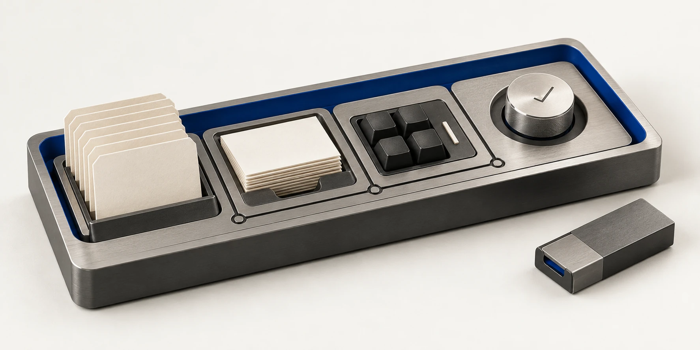
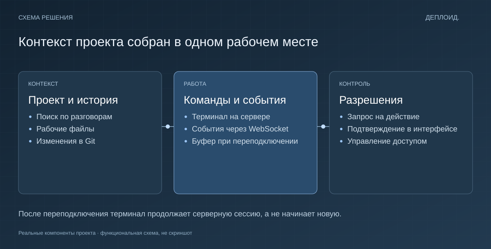

Терминал живёт на сервере
Переподключение браузера не создаёт новую сессию. Сервер сохраняет сессию и буфер вывода.
Веб-приложение · Инструменты разработки
При работе с ИИ удобно видеть не только переписку, но и то, что происходит с проектом. Для этого я собрал веб-интерфейс с файлами, историей и терминалом.

Задача
Контекст работы расползается по окнам: диалог отдельно, изменения файлов отдельно, команды — в терминале. После перерыва приходится восстанавливать картину.
Решение
В одном интерфейсе можно открыть проект, найти разговор, посмотреть изменения и продолжить работу. Действия, которым нужно разрешение, проходят через подтверждение.
Почему сделано именно так
Переподключение браузера не создаёт новую сессию. Сервер сохраняет сессию и буфер вывода.
Файлы, поиск по истории и изменения Git собраны в рабочем интерфейсе проекта.
Для операций, требующих разрешения, предусмотрен отдельный шаг подтверждения в интерфейсе.
События приходят через WebSocket. Терминальная сессия живёт на сервере и сохраняет буфер при переподключении. В интерфейс встроены просмотр изменений Git, поиск по истории и управление разрешениями.

Собственное веб-приложение. JavaScript, Node.js, WebSocket, Git. Обложка — иллюстрация идеи проекта. Функциональная схема находится в технических подробностях. Код и рабочие данные не публикуются.